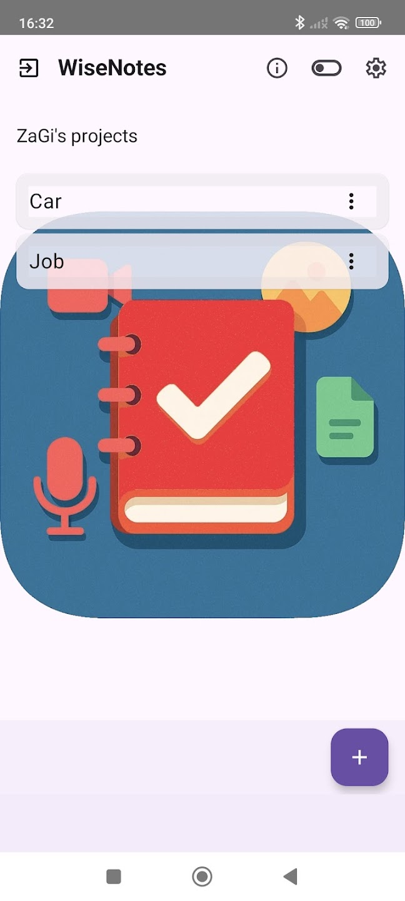
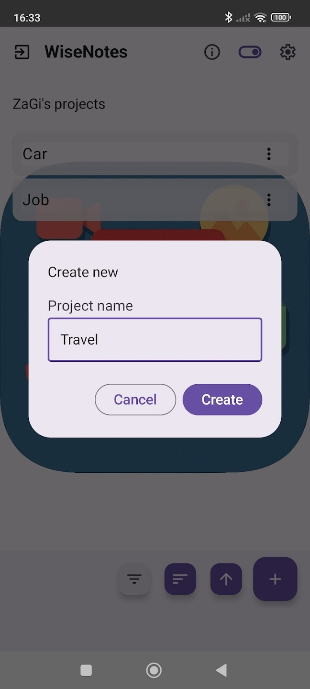
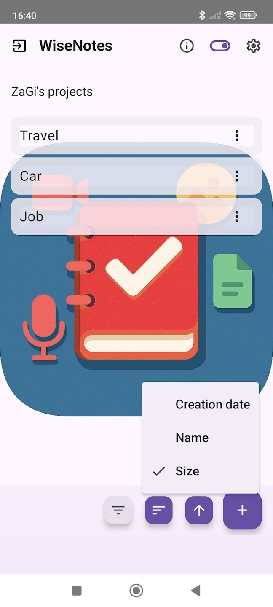
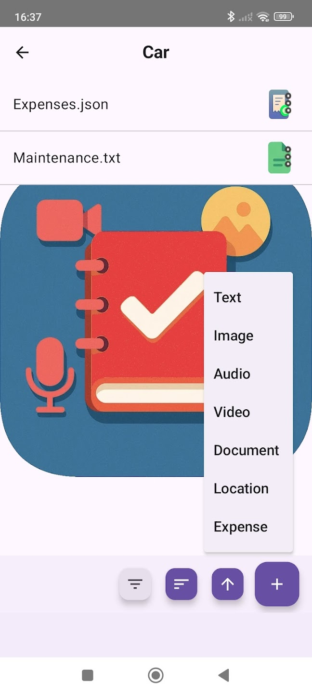
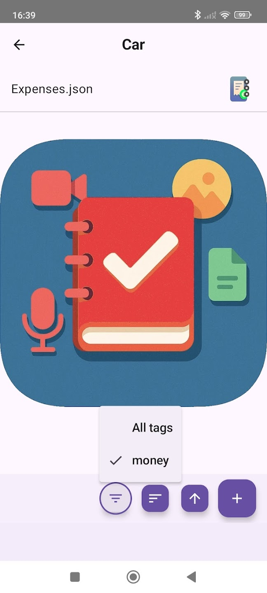

📝 WiseNotes
Organize your notes
into projects
Quickly and practically, even when you are on the go. Lightweight by design, powerful by purpose.
Download on Google Play
Who it's for
Built for people who are always moving
WiseNotes is designed for people who work or study on multiple projects and need to stay organized quickly, even while on the move.
🏗️Work or study on multiple projects
📂Collect notes and files in one place
⚡Prefer a simple, practical, and lightweight app
🚶Need to stay organized quickly, even while on the move
No complex systems. Just practical organization.
Project-based organization
Everything revolves around your projects
Create your projects and add all the notes you need. Files, multimedia content, and notes — all organized in a structured way.

Homepage – Project overview

Creating a new project

Ordering projects

Choosing the note type to add

Filtering notes by tags
Supported note types
Capture anything, anywhere
Notes can be created directly in the app or imported from your device, and shared individually or as an entire project.
📝Text
🖼️Images
🎥Videos
🎤Audio
📄Documents
📍Locations & maps
💰Expenses
Simple & fast interface
Designed to stay out of your way
WiseNotes focuses on what matters: getting your idea captured fast and finding it again easily.
- Minimal UI — no clutter, no distractions
- Quick actions — few taps to add or share content
- Long tap on project or note name to manage tags
- Lightweight — works smoothly even on older devices
Export & share
Your data, your way
Manage and transfer your content in a simple and flexible way.
Complete archiveCreate a full archive of any project with a single action.
Flexible sharingShare single notes or entire projects with anyone.
Cloud readySave everything to your preferred cloud service seamlessly.